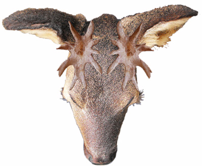

|
Elegance ...
 
Parmi les lagomerycidés des faluns, l'animal le plus élégant était certainement Stephanocemas.
Ses bois sont constitués d'un mérin fixe autour duquel se développe une couronne caduque.
L'élégance des bois associés avec son caractère caduc font penser qu'ils devaient intervenir dans la parade sexuelle à la saison des amours et peut-être dans des combats entre mâles pour éprouver la force des individus sans pour autant infliger des blessures importantes
Mais peut-être pas uniquement cet usage.
Stephanocemas elegantulus est un précurseur dans la lignée de Stéphanocemas. Les andouillers ont déjà une tendance partir à plat. Mais ils sont encore assez réduits par rapport aux bois des espèces plus tardives comme Stéphanocemas palmatus. Au point que certains auteurs incluent maintenant S. elegantulus dans un autre genre Paradicrocerus...
Tout petit bois...
Ce fossile représente une empaumure presque complète d’un probable Stéphanocemas.
Elle ne dépasse pas 3 cm dans sa plus grande longueur.
Sa petite taille pourrait correspondre au premier bois de rejet d’un jeune Stephanocemas, de petite taille, un des premiers bois de chute.
En effet le fossile présenté ici répond bien à la description des empaumures de bois de Stephanocemas elegantulus telles que décrites par Stehlin au début du siècle. Les principaux critères concordants sont:
Les bois de chute montrent à la base une marque en creux ovalaire.
De part et d’autre de la crête qui s’étend de l’andouiller antérieur à l’andouiller postérieur, la surface externe est plus profondément creusée que l’interne.
La surface interne descend en pente plus douce vers le bord interne et ce bord interne est agrémenté de 2 petites pointes.
L’andouiller antérieur est plus triangulaire que le postérieur et est bordé de 2 petites crêtes en relief.
Mais le mystère ne s’arrête pas là. Cette couronne montre des marques de morsures, mais pas de digestion. C’est un peu étrange quand on sait que dans la nature, les bois de chute des cervidés sont souvent grignotés ou même dévorés par des carnivores, mais aussi par des suidés ou des rongeurs pour récupérer le calcium de la structure du bois. Dans notre situation le bois a été mordu mais pas digéré.
Un drôle d’animal avec une drôle d’histoire. C’est toute la magie des faluns
|